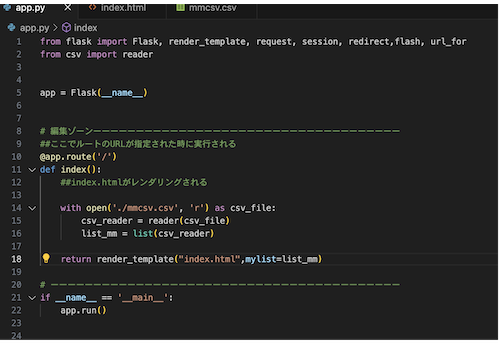
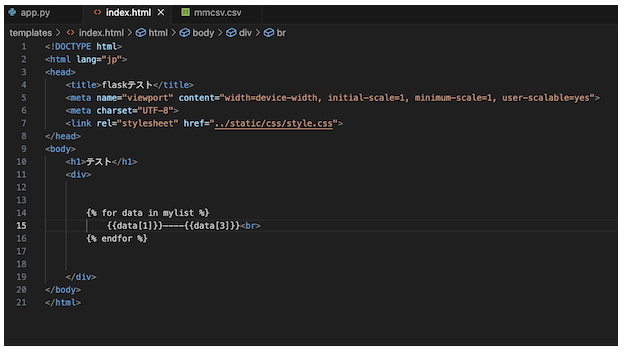
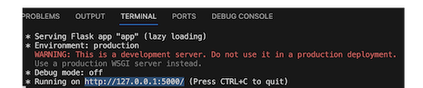
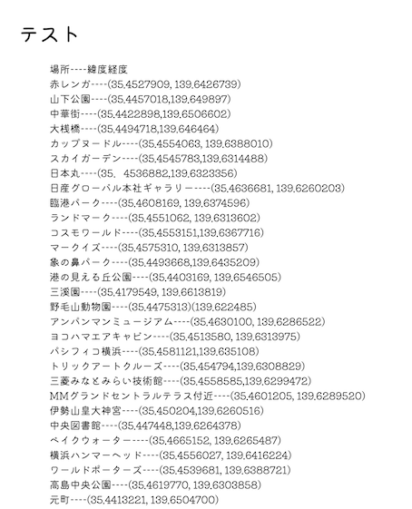

flaskはApp.pyから命令を送ってindex.htmlを動かすことができる。
render:表示する→render index.html:index.htmlを表示する。
{{}}の中に因数を入れることでapp.pyを編集するだけで内容を変更することが可能になる。
app.pyを動かすことでリンクを取得することが可能である。
取得したリンクを開くことでindex.htmlを見ることができる。
flaskを使うことでホームページを作成する際に因数を用いるので内容を変更することが容易になる。
また、因数をつかうことでデータを取得し、必要な情報だけを抽出することが可能である。